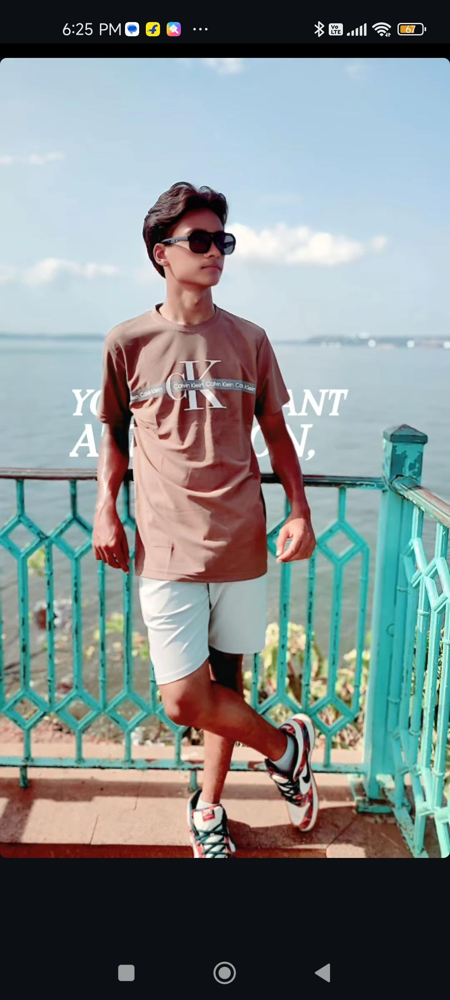

Meer (the pacian Femboy)
The 12th pass out Charming and fluid in style, being adored for his soft looks and gender-bending fashion including sending picture online to his homophobic friends to get bullied(finding pleasure in it).
Emiru (Streamer & Cosplayer)
Popular for her cosplay and gaming streams, Emiru often embraces androgynous and femboy aesthetics.
Finana Ryugu (VTuber)

Part of the femboy-coded VTuber fandom, Finana’s voice and energy make her a queer fave.
James Charles
Makeup guru and proud queer creator, James mixes glam and androgyny boldly and publicly.
Haku (Naruto)

A gentle and powerful character, Haku’s beauty and softness made them a standout in anime history.